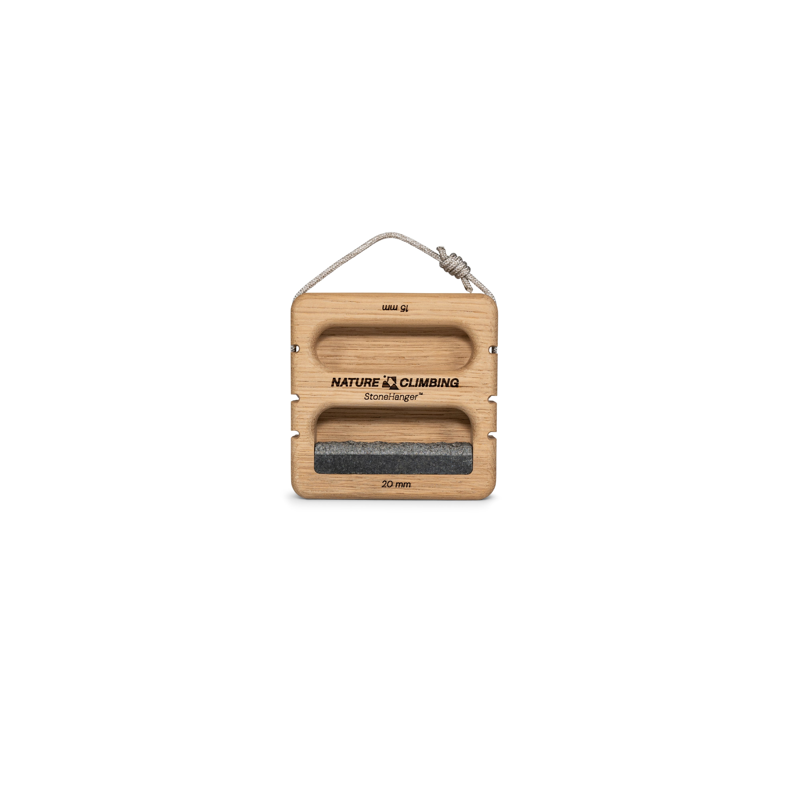
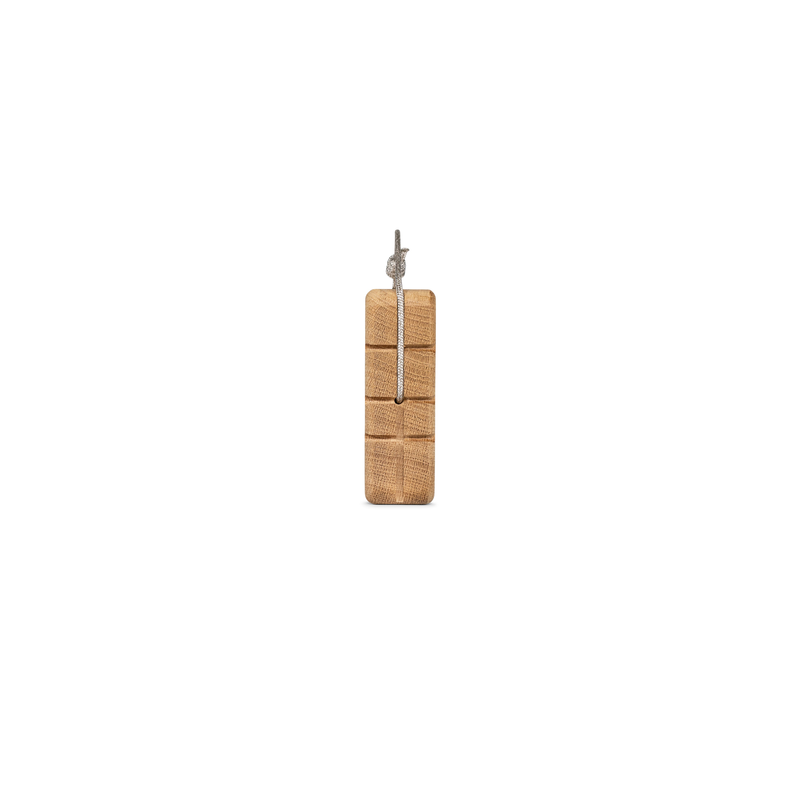
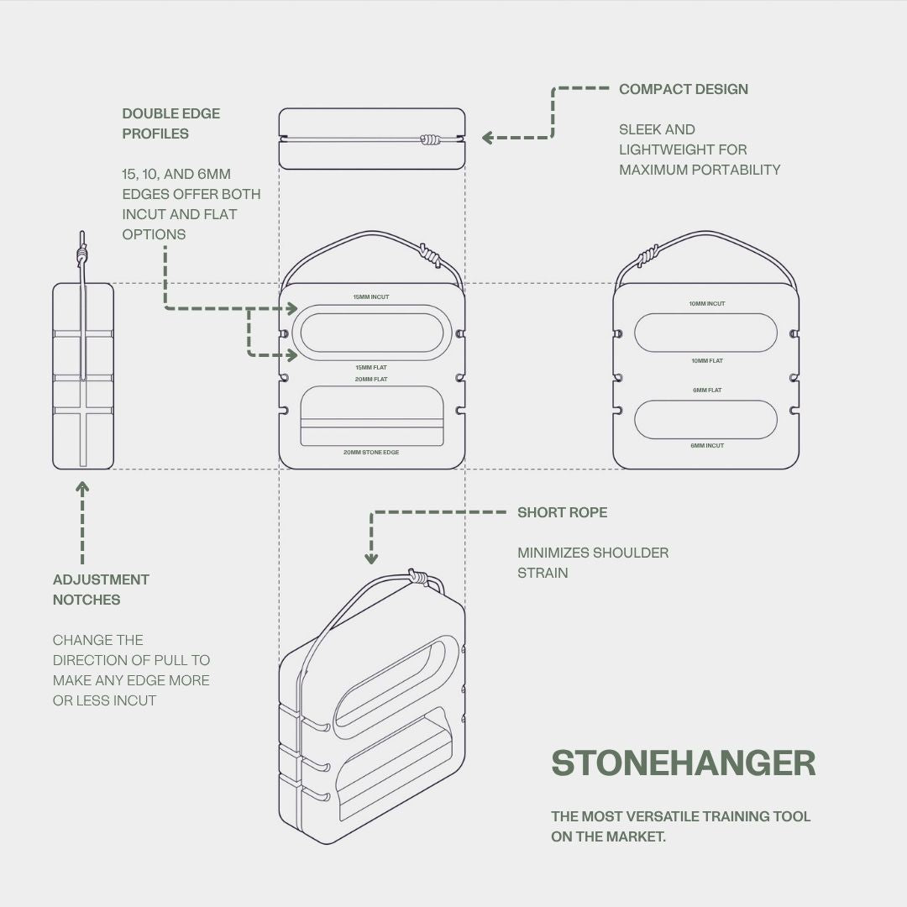

nature-stone-hanger
Granite front establishes two front cavities and the stone contact; side shows a lateral cord mouth and three adjustment grooves; close-up distinguishes incut/flat rails and granite insert. Technical drawing shows both faces and eight grip edges. The exact hidden side-to-side connection is not visible; historical evidence explicitly leaves it unknown.
Source packet; approved by user 2026-09-29. No CAD geometry authored.
3. Stone_Hanger_Granite_1.jpg

Nature Climbing source
Granite front establishes two front cavities and the stone contact; side shows a lateral cord mouth and three adjustment grooves; close-up distinguishes incut/flat rails and granite insert. Technical drawing shows both faces and eight grip edges. The exact hidden side-to-side connection is not visible; historical evidence explicitly leaves it unknown.
SHA-256 8e8df7719638e42d4018a43254b3dac0bf3bfb5ac0d6ba149e9c92f634254f40
approved by user 2026-09-29
4. Stone_Hanger_Granite_3.jpg

Nature Climbing source
Granite front establishes two front cavities and the stone contact; side shows a lateral cord mouth and three adjustment grooves; close-up distinguishes incut/flat rails and granite insert. Technical drawing shows both faces and eight grip edges. The exact hidden side-to-side connection is not visible; historical evidence explicitly leaves it unknown.
SHA-256 905103e785b884af1a56abc203010cac92ade82d9e3a9e97d67d3427de4c9bc2
approved by user 2026-09-29
5. Stone_Hanger_Granite_4.jpg

Nature Climbing source
Granite front establishes two front cavities and the stone contact; side shows a lateral cord mouth and three adjustment grooves; close-up distinguishes incut/flat rails and granite insert. Technical drawing shows both faces and eight grip edges. The exact hidden side-to-side connection is not visible; historical evidence explicitly leaves it unknown.
SHA-256 56d7f7312d42222f66bd01cfd7e77a5c9f711dd55dea3cfc885ce5094f322576
approved by user 2026-09-29
6. StonehangerTechDrawing_Draft1.jpg

Nature Climbing source
Granite front establishes two front cavities and the stone contact; side shows a lateral cord mouth and three adjustment grooves; close-up distinguishes incut/flat rails and granite insert. Technical drawing shows both faces and eight grip edges. The exact hidden side-to-side connection is not visible; historical evidence explicitly leaves it unknown.
SHA-256 57287e539da523b0366c3cf5a0d1c0b551a0ee65f2fddae202c9c4614bc1d7ee
approved by user 2026-09-29